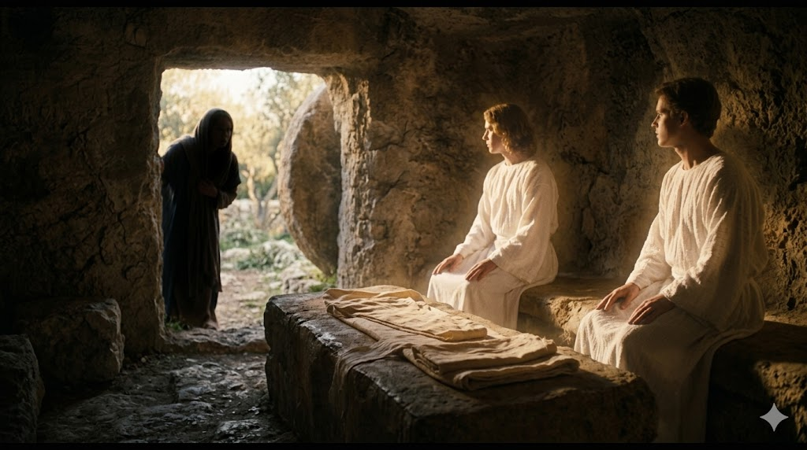

빈 무덤 입구 앞에 홀로 무릎 꿇고 울고 있는 막달라 마리아 — 이른 아침 부드러운 빛이 그녀의 눈물을 비추고, 무덤 안에서 흰 옷 입은 두 천사가 그녀를 바라보고 있다
"마리아는 무덤 밖에 서서 울고 있더니 울면서 구부려 무덤 안을 들여다보니 흰 옷 입은 두 천사가 예수의 시체 뉘었던 곳에 하나는 머리 편에, 하나는 발 편에 앉았더라 천사들이 이르되 여자여 어찌하여 우느냐 이르되 사람들이 내 주님을 옮겨다가 어디 두었는지 내가 알지 못함이니이다" — 요한복음 20:11-13
베드로와 요한은 빈 무덤을 확인한 뒤 자기 집으로 돌아갔습니다. 그러나 마리아는 떠나지 않았습니다. 그녀는 무덤 밖에 서서 울고 있었습니다. 이 울음은 단순한 슬픔 이상의 것이었습니다. 사랑하는 주님의 시신마저 어디 있는지 알 수 없다는 절망, 그 시신을 직접 섬기고 싶었지만 할 수 없다는 무력감이 뒤섞인 눈물이었습니다. 그녀는 이해할 수 없는 상황 앞에서도 그 자리를 떠나지 않았습니다. 사랑은 이해되지 않아도 머뭅니다. 설명이 없어도 남아 있습니다. 마리아의 눈물은 그 사랑의 깊이를 온전히 보여줍니다.
요한은 놀라운 장면을 기록합니다. 마리아가 울면서 몸을 구부려 무덤 안을 들여다보자, 흰 옷 입은 두 천사가 보였습니다. 하나는 머리 편에, 하나는 발 편에 앉아 있었습니다. 그것은 언약궤 위의 두 그룹의 모습을 연상시키는 장면입니다 — 하나님의 영광이 임하던 그 자리가 지금 예수님이 누우셨던 자리에 재현되고 있었습니다. 천사들은 마리아에게 묻습니다. "여자여, 어찌하여 우느냐?" 이것은 꾸짖음이 아니었습니다. 하늘이 그녀의 눈물을 알아보고 있다는 신호였습니다. 하나님은 그녀의 슬픔을 외면하지 않으셨습니다.

무덤 안에 앉아 있는 두 천사 — 예수님의 시체가 뉘었던 자리 머리 편과 발 편에 각각 앉아 슬픔에 잠긴 마리아를 바라보는 하늘의 증인들
베드로와 요한은 빈 무덤을 보고 돌아갔습니다. 그러나 마리아는 그 자리에 남아 울었습니다. 남들이 자리를 떠난 후에도 머무는 것, 그것이 마리아의 사랑이었습니다. 우리의 삶에도 이런 순간이 있습니다. 모두가 "이제 끝났다"며 떠난 자리에서 혼자 남아 주님을 찾는 순간. 그 눈물을 부끄러워하지 마십시오. 하늘은 그 눈물을 보고 있습니다. 천사들이 마리아의 눈물을 보았듯, 하나님은 지금 당신의 눈물을 보고 계십니다.
마리아는 천사를 만나고도 주님을 찾는 데서 멈추지 않았습니다. 천사의 등장만으로도 충분한 놀라운 경험이었지만, 그녀의 마음에는 오직 한 분만이 있었습니다. "내 주님"을 어디 두었는지 알지 못한다는 그 말 — 여기서 '내 주님'이라는 표현이 눈에 띕니다. 그것은 단순히 '예수님'이 아니라, 나의 주님이라는 인격적이고 친밀한 고백입니다. 당신에게도 주님은 '나의 주님'이십니까? 그 친밀함이 우리를 눈물 속에서도 포기하지 않게 합니다.
모두가 돌아간 뒤에도 마리아는 울며 그 자리에 남았습니다.
하나님은 그 눈물을 천사를 보내어 맞이하셨습니다.
포기하지 않는 사랑 앞에, 하늘은 반드시 응답합니다.